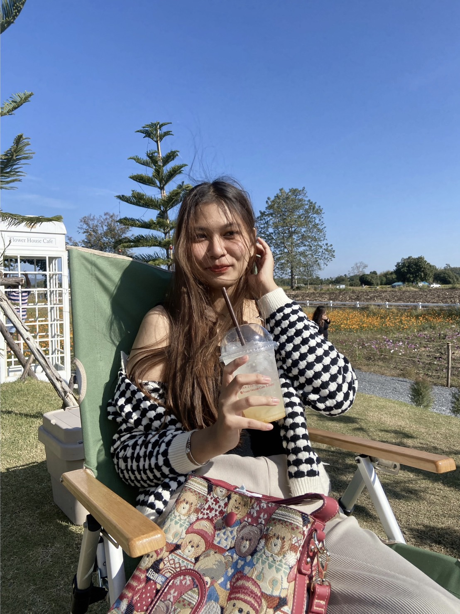

ชื่อ: นางสาวอนันตญา เยาวฤทธิ์ ชื่อเล่น: แตงโม
เชื้อชาติ: ไทย สัญชาติ: ไทย ศาสนา: พุทธ
บ้านเกิด: อำเภอเมือง จังหวัดลพบุรี
เกิดวันที่: 9 กันยายน 2546
อายุ: 20 ปี
สำเร็จการศึกษาระดับชั้นประถม: จากโรงเรียนกองทัพบกอุปถัมภ์สองเหล่าสร้าง จังหวัดลพบุรี
สำเร็จการศึกษาระดับชั้นมัธยมตอนต้น: จากโรงเรียนวินิตศึกษาในพระราชูปถัมภ์ จังหวัดลพบุรี
สำเร็จการศึกษาระดับชั้นมัธยมตอนปลาย: จากโรงเรียนพิบูลวิทยาลัย จังหวัดลพบุรี
ปัจจุบัน: กำลังศึกษาชั้นอุดมศึกษาปีที่ 2 มหาวิทยาลัยบูรพา
คณะวิทยาการสารสนเทศ สาขาเทคโนโลยีสารสนเทศเพื่ออุตสาหกรรมดิจิทัล
นิสัยส่วนตัว: เป็นคนขี้อาย แต่ถ้าเพื่อผลประโยชน์ตัวเองอะไรที่ทำได้ก็จะทำ
ถ้าไม่ค่อยสนิทกับใครจะเงียบ แต่ถ้าสนิทจะพูดเยอะ
ชอบนึกถึงความรู้สึกของคนอื่นก่อนความรู้สึกของตนเอง
ความสามารถพิเศษ: ร้องเพลง
คติประจำใจ: อะไรที่ยังมีโอกาสได้ทำก็ทำตั้งแต่ตอนนี้ ดีกว่าต้องมานั่งเสียดายทีหลัง
งานอดิเรก: อ่านหนังสือ เล่นเกม ฟังเพลง ร้องเพลง